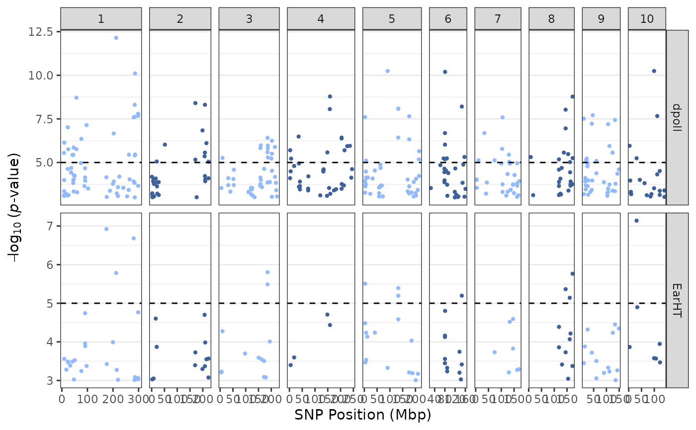
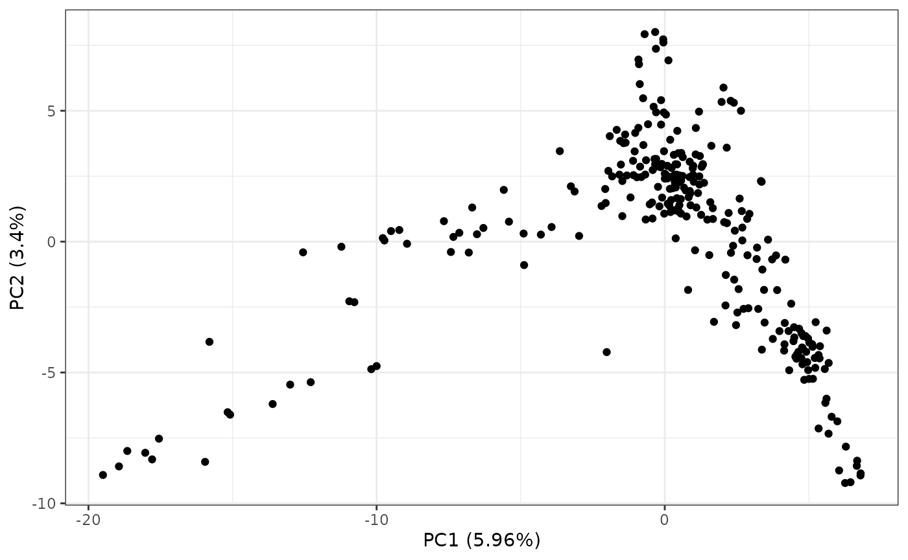
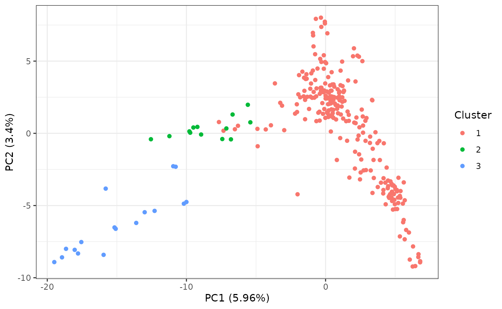
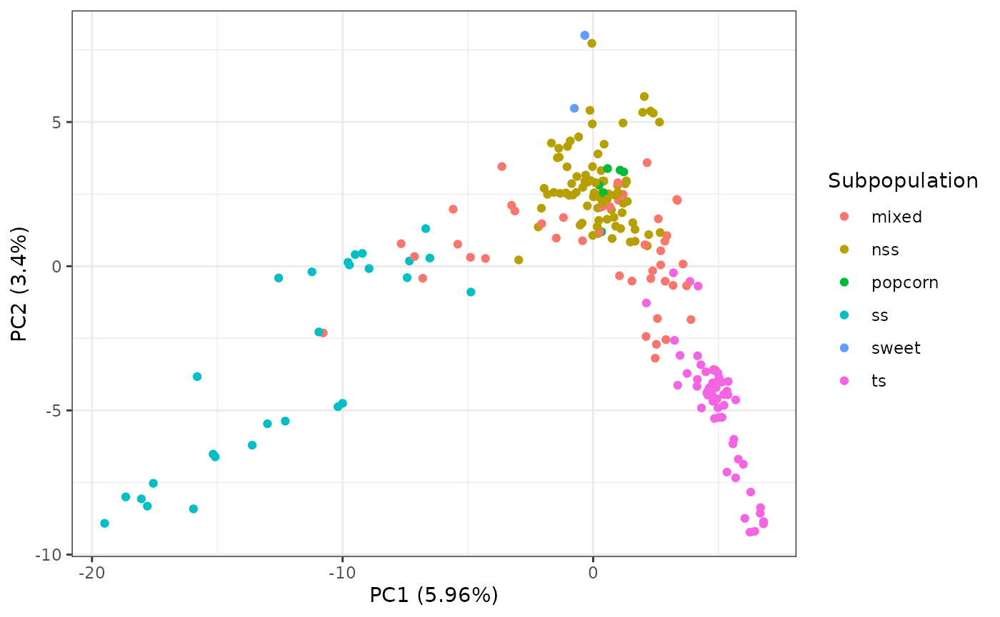
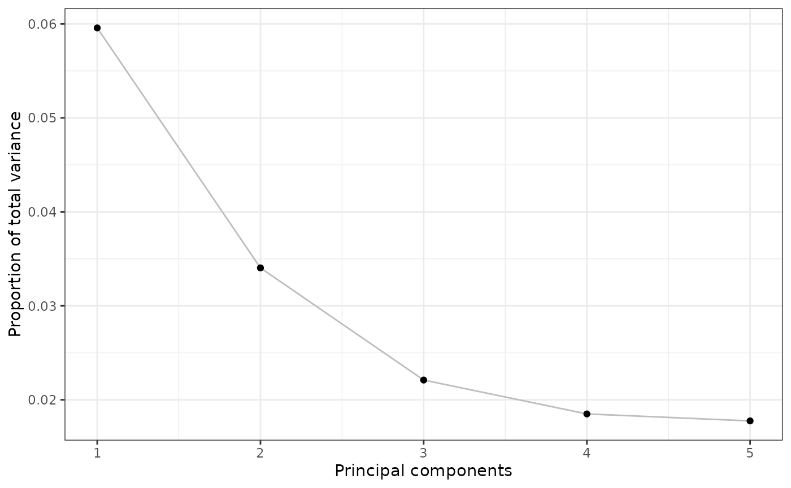
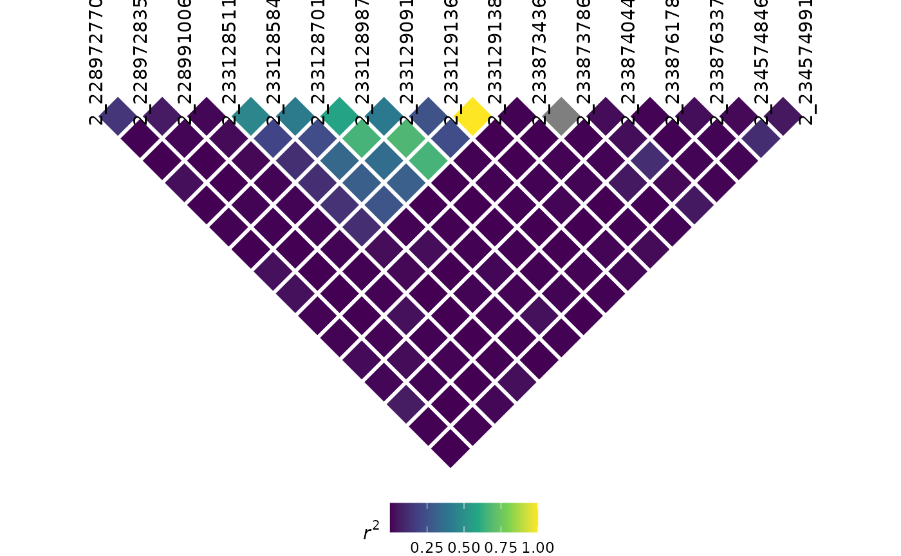

Introduction
Overview
Thanks for checking out rTASSEL! In this document, we will go over the functionalities used to work with the TASSEL software via R.
TASSEL is a software package used to evaluate traits associations, evolutionary patterns, and linkage disequilibrium. Strengths of this software include:
The opportunity for a number of new and powerful statistical approaches to association mapping such as a General Linear Model (GLM) and Mixed Linear Model (MLM). MLM is an implementation of the technique which our lab’s published Nature Genetics paper - Unified Mixed-Model Method for Association Mapping - which reduces Type I error in association mapping with complex pedigrees, families, founding effects and population structure.
An ability to handle a wide range of indels (insertion & deletions). Most software ignore this type of polymorphism; however, in some species (like maize), this is the most common type of polymorphism.
More information can be found in the following paper:
Bradbury PJ, Zhang Z, Kroon DE, Casstevens TM, Ramdoss Y, Buckler ES. (2007) TASSEL: Software for association mapping of complex traits in diverse samples. Bioinformatics 23:2633-2635.
Detailed documentation and source code can be found on our website:
Motivation
The main goal of developing this package is to construct an R-based front-end to connect to a variety of highly used TASSEL methods and analytical tools. By using R as a front-end, we aim to utilize a unified scripting workflow that exploits the analytical prowess of TASSEL in conjunction with R’s popular data handling and parsing capabilities without ever having the user to switch between these two environments.
Disclaimer
Due to the experimental nature of this package’s lifecycle, end functionalities are prone to change after end-user input is obtained in the near future.
Citation
To cite rTASSEL, please use the following citation:
Monier et al., (2022). rTASSEL: An R interface to TASSEL for analyzing genomic diversity. Journal of Open Source Software, 7(76), 4530, https://doi.org/10.21105/joss.04530
Preliminary steps
Setting up TASSEL JARs
Before using rTASSEL for the first time, you must
download the TASSEL Java libraries. This is a one-time
setup step that caches the required JAR files on your machine:
Once the JARs are cached, subsequent calls to
library(rTASSEL) will automatically detect and use them.
For more details on the caching system, custom JAR paths, and
troubleshooting, see the Installing
rTASSEL vignette.
Setting Memory
Since genome-wide association analyses can use up a lot of
computational resources, memory allocation to rTASSEL can
be modified. To change the amount of memory, use the base
options() function and modify the following parameter:
Replace <memory> with a specified unit of memory.
For example, if I want to allocate a maximum of 6 GB of memory for my
operations, I would use the input "-Xmx6g", where
g stands for gigabyte (GB). More information about memory
allocation can be found here.
NOTE: Setting Java memory options for
rTASSEL and any rJava-related packages
needs to be set before loading the
rTASSEL package!
The importance of logging your progress
Before we begin analyzing data, optional parameters can be set up to
make rTASSEL more efficient. To prevent your R console from
being overloaded with TASSEL logging information, it is highly
recommended that you start a logging file. This file will house
all of TASSEL’s logging output which is beneficial for debugging and
tracking the progress of your analytical workflow. To start a logging
file, use the following command:
If the startLogger() file path is set to
NULL, the logging file will be created in your current
working directory. If you are unsure of what your working directory is
in R, use the base getwd() command.
Additionally, since this is a general walkthrough, certain intricaces
of each function may glossed over. If you would like to study a function
in full, refer to the R documentation by using
?<function> in the console, where
<function> is an rTASSEL-based
function.
Reading Data
Overview
Like TASSEL, rTASSEL will read two main types of
data:
- Genotype data
- Phenotype data
This data can be read in several different ways. In the following
examples, we will demonstrate various ways genotype and phenotype
information can be loaded into rTASSEL objects.
Loading genotype data
From a path
Currently, reading in genotype data to rTASSEL is based
off of file locations as paths. Genotype/sequencing data can be stored
in a variety of formats. rTASSEL can read and store a wide
variety of file types:
- hapmap (HMP)
- HDF5 (hierarchical data format version 5)
- VCF (variant call format)
- Plink
To load this genotype data, simply store your file location as a
string object in R. For this example, we will load two toy data sets -
one being a VCF file and the other being a hapmap file. These data sets
can be accessed via the rTASSEL package itself:
# Load hapmap data
genoPathHMP <- system.file(
"extdata",
"mdp_genotype.hmp.txt",
package = "rTASSEL"
)
genoPathHMP## [1] "/home/runner/work/_temp/Library/rTASSEL/extdata/mdp_genotype.hmp.txt"
# Load VCF data
genoPathVCF <- system.file(
"extdata",
"maize_chr9_10thin40000.recode.vcf",
package = "rTASSEL"
)
genoPathVCF## [1] "/home/runner/work/_temp/Library/rTASSEL/extdata/maize_chr9_10thin40000.recode.vcf"Now that we have the file paths to this data, we can pass this to
TASSEL and create a formal TasselGenotypePhenotype class
object in R using the following:
# Load in hapmap file
tasGenoHMP <- readGenotypeTableFromPath(
path = genoPathHMP
)## The function 'readGenotypeTableFromPath()' will be deprecated soon.
## This will be replaced by 'readGenotype()' in the next update.
# Load in VCF file
tasGenoVCF <- readGenotypeTableFromPath(
path = genoPathVCF
)## The function 'readGenotypeTableFromPath()' will be deprecated soon.
## This will be replaced by 'readGenotype()' in the next update.When we call these objects, a summary of the data will be posted to the R console:
tasGenoHMP## A TasselGenotypePhenotype Dataset
## Class.............. TasselGenotypePhenotype
## Taxa............... 281
## Positions.......... 3093
## Taxa x Positions... 869133
## ---
## Genotype Table..... [x]
## Phenotype Table.... [ ]This summary details the number of Taxa (Taxa) and
marker positions (Positions) within the data set.
Additionally, since we can load both genotype and phenotype information
into this object, a helpful check will be displayed to show what is
populating the object ([x] or [ ]).
Additional information about TasselPhenotypeGenotype data sets
In general, this S4 class data object houses “slot” information relating to TASSEL/Java pointers of the respective data.
class(tasGenoHMP)## [1] "TasselGenotypePhenotype"
## attr(,"package")
## [1] "rTASSEL"
slotNames(tasGenoHMP)## [1] "name" "jTasselObj" "jTaxaList" "jPositionList"
## [5] "jGenotypeTable" "jPhenotypeTable"Technically, this object does not contain the full information of the
data represented in R space, but merely contains addresses to the memory
store of the reference TASSEL object ID. For example, if we wanted to
extract the GenotypeTable with the S4 @
operator, we would get something that looks like this:
tasGenoHMP@jGenotypeTable## [1] "Java-Object{net.maizegenetics.dna.snp.CoreGenotypeTable@387a8303}"This entity is a rJava internal identifier. It isn’t
until we call downstream rTASSEL functions where we will
bring the TASSEL data into the R environment.
Loading phenotype data
From a path
Similar to reading in genotype data, phenotype data can also be read in via paths. If you already have preconstructed phenotype data in a file, this option will most likely work best for you. One caveat to this is how the data file is constructed in terms of columns and trait data for TASSEL analyses. More information about how these files can be found at this link under the Numerical Data section.
Loading this type of data is very similar to how genotype data is
loaded. here, we will use the readPhenotypeFromPath()
function:
# Read from phenotype path
phenoPath <- system.file("extdata", "mdp_traits.txt", package = "rTASSEL")
phenoPath## [1] "/home/runner/work/_temp/Library/rTASSEL/extdata/mdp_traits.txt"
# Load into rTASSEL `TasselGenotypePhenotype` object
tasPheno <- readPhenotypeFromPath(
path = phenoPath
)## The function 'readPhenotypeFromPath()' will be deprecated soon.
## This will be replaced by 'readPhenotype()' in the next update.
# Inspect object
tasPheno## A TasselGenotypePhenotype Dataset
## Class.............. TasselGenotypePhenotype
## Taxa............... 301
## Positions.......... NA
## Taxa x Positions... NA
## ---
## Genotype Table..... [ ]
## Phenotype Table.... [x]
## ---
## Traits: Taxa EarHT dpoll EarDiaThe object output is very similar to the genotype table output with some minor additions to which traits are displayed in the file.
From an R data frame
In some cases you might want to first modify your phenotype data set
in R and then load it into the TASSEL environment. If you wish to choose
this route, you will need to use the
readPhenotypeFromDataFrame() function along with a couple
of parameters. First, we will construct an R data frame and load it with
this function:
# Create phenotype data frame
phenoDF <- read.table(phenoPath, header = TRUE)
colnames(phenoDF)[1] <- "Taxon"
# Inspect first few rows
head(phenoDF)## Taxon EarHT dpoll EarDia
## 1 811 59.50 -999.0 -999.00000
## 2 33-16 64.75 64.5 -999.00000
## 3 38-11 92.25 68.5 37.89700
## 4 4226 65.50 59.5 32.21933
## 5 4722 81.13 71.5 32.42100
## 6 A188 27.50 62.0 31.41900
# Load into rTASSEL `TasselGenotypePhenotype` object
tasPhenoDF <- readPhenotypeFromDataFrame(
phenotypeDF = phenoDF,
taxaID = "Taxon",
attributeTypes = NULL
)## The function 'readPhenotypeFromDataFrame()' will be deprecated soon.
## This will be replaced by 'readPhenotype()' in the next update.
# Inspect new object
tasPhenoDF## A TasselGenotypePhenotype Dataset
## Class.............. TasselGenotypePhenotype
## Taxa............... 301
## Positions.......... NA
## Taxa x Positions... NA
## ---
## Genotype Table..... [ ]
## Phenotype Table.... [x]
## ---
## Traits: Taxa EarHT dpoll EarDiaThe phenotypeDF parameter is for the R data frame
object. The taxaID parameter is needed to determine which
column of your data frame is your TASSEL taxa data. The final parameter
(attributeTypes) is optional. If this parameter is set to
NULL, all remaining data frame columns will be classified
as TASSEL data types. If this is not the case for your data
(e.g. if you have covariate or factor data in your experiment),
you will need to specify which columns are what TASSEL data
type (i.e. data, covariate, or
factor). This will have to be passed as an R vector of
string elements (e.g. c("data", "factor", "covariate")).
Currently, this data type needs to be entered in the same order
as they are found in the data frame.
Loading genotype and phenotype data simultaneously
In association studies, we are interested in combining our genotype
and phenotype data. To usually run this operation in TASSEL, an
intersect combination between the two data sets is needed. To run this
in rTASSEL, we can use the
readGenotypePhenotype() function. The parameter input
needed for this function is, of course, a genotype and phenotype object.
For genotype input, the following can be used:
- a path to a genotype file
- a prior
TasselGenotypePhenotypeobject
For phenotype input, the following can be used:
- a path to a phenotype data set,
- a prior
TasselGenotypePhenotypeobject - an R data frame
For example, if we wanted to read the prior
TasselGenotypePhenotype genotype and phenotype objects from
earlier:
tasGenoPheno <- readGenotypePhenotype(
genoPathOrObj = tasGenoHMP,
phenoPathDFOrObj = tasPheno
)## The function 'readGenotypePhenotype()' will be deprecated soon.
## This will be replaced by 'join()' in the next update.
tasGenoPheno## A TasselGenotypePhenotype Dataset
## Class.............. TasselGenotypePhenotype
## Taxa............... 279
## Positions.......... 3093
## Taxa x Positions... 862947
## ---
## Genotype Table..... [x]
## Phenotype Table.... [x]
## ---
## Traits: Taxa EarHT dpoll EarDiaWe can also use a combination of the above parameter options
(e.g. load a genotype path and a phenotype data frame, etc.). One caveat
though, if you load in a phenotype data frame object with this
function, the prior parameters from the
readPhenotypeFromDataFrame will be needed
(i.e. the taxaID and attributeTypes
parameters):
tasGenoPhenoDF <- readGenotypePhenotype(
genoPathOrObj = genoPathHMP,
phenoPathDFOrObj = phenoDF,
taxaID = "Taxon",
attributeTypes = NULL
)## The function 'readGenotypePhenotype()' will be deprecated soon.
## This will be replaced by 'join()' in the next update.## The function 'readGenotypeTableFromPath()' will be deprecated soon.
## This will be replaced by 'readGenotype()' in the next update.## The function 'readPhenotypeFromDataFrame()' will be deprecated soon.
## This will be replaced by 'readPhenotype()' in the next update.
tasGenoPhenoDF## A TasselGenotypePhenotype Dataset
## Class.............. TasselGenotypePhenotype
## Taxa............... 279
## Positions.......... 3093
## Taxa x Positions... 862947
## ---
## Genotype Table..... [x]
## Phenotype Table.... [x]
## ---
## Traits: Taxa EarHT dpoll EarDiaReading kinship data
rTASSEL also provides users the ability to read in delimited
“flat-file” kinship objects as a TasselDistanceMatrix
object using the function, readTasselDistanceMatrix():
## Get toy kinship data from package ----
kinshipPath <- system.file(
"extdata",
"mdp_kinship.txt",
package = "rTASSEL"
)
## Read ----
readTasselDistanceMatrix(kinshipPath)## A TasselDistanceMatrix Object of 277 x 277 elements:
##
## 33-16 38-11 4226 4722 ... YU796NS
## 33-16 2.0000 0.1816 0.0187 0.0000 ... 0.1162
## 38-11 0.1816 2.0000 0.0000 0.1120 ... 0.1421
## 4226 0.0187 0.0000 2.0000 0.0000 ... 0.1904
## 4722 0.0000 0.1120 0.0000 2.0000 ... 0.0000
## ... ... ... ... ... ... ...
## YU796NS 0.1162 0.1421 0.1904 0.0000 ... 2.0000Reading numeric genotype data
TASSEL 5 also has the ability to read in matrix-like genotype data
where instead of reported allele states, probability values between 0
and 1 for a given reference state are reported. These are classified as
NumericGenotypes and can behave in similar fashion to
standard allele-based genotype objects for analyses like association
(e.g., TWAS). We can read this data in two ways:
-
From a file (TASSEL 5-formatted
<Numeric>data):<Numeric> <Marker> m1 m2 m3 line_a 0 0.5 0.2 line_b 1 0 0.123 line_c 1 0.3 0.1415 From a formatted R matrix
Read numeric data from file
Like other genotype files, we can read this in via
readGenotypeTableFromPath():
numGtPath <- system.file("extdata", "numeric_genotype.txt", package = "rTASSEL")
numGt <- readGenotypeTableFromPath(numGtPath)## The function 'readGenotypeTableFromPath()' will be deprecated soon.
## This will be replaced by 'readGenotype()' in the next update.
numGt## A TasselGenotypePhenotype Dataset
## Class.............. TasselGenotypePhenotype
## Taxa............... 3
## Positions.......... 3
## Taxa x Positions... 9
## ---
## Genotype Table..... [x]
## Phenotype Table.... [ ]Read numeric data from matrix
To read from an already existing R matrix, make sure that it formatted properly with row and column names. In the following example, I will make a function that will simulate an example R matrix with values between 0 and 1.
# Simulate numeric matrices
simNumericGt <- function(nRow, nCol) {
# Matrix values
minMax <- function(x) (x - min(x)) / (max(x) - min(x))
d <- rnorm(nCol * nRow) |> minMax()
m <- matrix(d, nrow = nRow, ncol = nCol)
# Taxa values
taxa <- sprintf("line_%02d", seq_len(nRow))
# Position values
mIds <- sprintf("marker_%02d", seq_len(nCol))
mPos <- seq_len(nCol)
# Add IDs to matrix
colnames(m) <- mIds
rownames(m) <- taxa
return(m)
}
# Simulate a matrix with 5 taxa and 10 sites
simMat <- simNumericGt(5, 10)
# Inspect the first 3 rows and columns
simMat[1:3, 1:3]## marker_01 marker_02 marker_03
## line_01 0.1997465 0.6905248 0.3627344
## line_02 0.5185338 0.1185218 0.5904937
## line_03 0.0000000 0.4217356 0.8670450Once properly formatted, you read and evaluate this using the
readNumericGenotypeFromRMatrix() function:
numGt <- readNumericGenotypeFromRMatrix(simMat)
numGt## A TasselGenotypePhenotype Dataset
## Class.............. TasselGenotypePhenotype
## Taxa............... 5
## Positions.......... 10
## Taxa x Positions... 50
## ---
## Genotype Table..... [x]
## Phenotype Table.... [ ]Converting TASSEL 5 data into R objects
Convert genotype data
To convert a TASSEL 5 genotype table into an R matrix
object, you can use base R’s as.matrix() function. This
will by deafault, return a dosage matrix where dosage
is the number of alternative alleles present for a given taxa and site
element:
gtMat <- as.matrix(tasGenoPheno)
# Show first 10 rows and 4 columns
gtMat[1:10, 1:4]## PZB00859.1 PZA01271.1 PZA03613.2 PZA03613.1
## 33-16 2 0 0 2
## 38-11 2 2 0 2
## 4226 2 0 0 2
## 4722 2 2 0 2
## A188 0 0 0 2
## A214N 2 0 2 0
## A239 0 0 2 2
## A272 0 0 2 2
## A441-5 2 0 0 2
## A554 2 2 2 2Convert phenotype data
If you want to bring in phenotype data into the R environment, you
can use the getPhenotypeDF() function. All this function
needs is a TasselGenotypePhenotype class object
containing a phenotype table:
tasExportPhenoDF <- getPhenotypeDF(tasObj = tasGenoPheno)## The function 'getPhenotypeDF()' will be deprecated soon.
## This will be replaced by 'as.data.frame()' in the next update.
head(tasExportPhenoDF)## Taxa EarHT dpoll EarDia
## 1 33-16 64.75 64.5 NaN
## 2 38-11 92.25 68.5 37.89700
## 3 4226 65.50 59.5 32.21933
## 4 4722 81.13 71.5 32.42100
## 5 A188 27.50 62.0 31.41900
## 6 A214N 65.00 69.0 32.00600As shown above, an R tibble-based data frame is exported
with converted data types translated from TASSEL. See the following
table what TASSEL data types are tranlated into within the R
environment:
| TASSEL Data | Converted R Data type |
|---|---|
| taxa | character |
| data | numeric |
| covariate | numeric |
| factor | factor |
Filtering genotype data
NOTE: This is just a “snapshot” of how we can filter genotype information in rTASSEL. For more information, please see the additional vignette, “Filtering Genotype Tables”.
Prior to association analyses, filtration of genotype data may be necessary. In TASSEL, this accomplished through the Filter menu using two primary plugins:
- Filter Site Builder plugin
- Filter Taxa Builder plugin
In rTASSEL, this can also be accomplished using the
follwing functions:
These objects take a TasselGenotypePhenotype class
object. For example, in our genotype data set, if we want to remove
monomorphic and low coverage sites, we could use the following
parameters in filterGenotypeTableSites():
tasGenoPhenoFilt <- filterGenotypeTableSites(
tasObj = tasGenoPheno,
siteMinCount = 150,
siteMinAlleleFreq = 0.05,
siteMaxAlleleFreq = 1.0,
siteRangeFilterType = "none"
)
tasGenoPhenoFilt## A TasselGenotypePhenotype Dataset
## Class.............. TasselGenotypePhenotype
## Taxa............... 279
## Positions.......... 2555
## Taxa x Positions... 712845
## ---
## Genotype Table..... [x]
## Phenotype Table.... [x]
## ---
## Traits: Taxa EarHT dpoll EarDiaWe can then compare this to our original pre-filtered data set:
tasGenoPheno## A TasselGenotypePhenotype Dataset
## Class.............. TasselGenotypePhenotype
## Taxa............... 279
## Positions.......... 3093
## Taxa x Positions... 862947
## ---
## Genotype Table..... [x]
## Phenotype Table.... [x]
## ---
## Traits: Taxa EarHT dpoll EarDiaThese functions can work on any TasselGenotypePhenotype
class object that contains genotypic data, regardless of single or
combined TASSEL objects.
Analysis - Relatedness
Create a kinship matrix object
In TASSEL, for mixed linear model analyses, a kinship matrix
calculated from genotype data is necessary. This can be accomplished by
calculating a kinship TASSEL object using the function
kinshipMatrix(). The main parameter input is a
TasselGenotypePhenotype class object that contains a
genotype data set:
tasKin <- kinshipMatrix(tasObj = tasGenoPheno)This function allows for several types of algorithm to used using the
method parameter. More info about these methods can be
found here.
Calculate a distance matrix
Very similar to kinship matrix calculation, a distance matrix can
also be calculated using genotype data using the function
distanceMatrix():
tasDist <- distanceMatrix(tasObj = tasGenoPheno)
TasselDistanceMatrix objects
Overview
The prior two functions will generate a pairwise matrix
(e.g.
dimensions). The return object is an rTASSEL class,
TasselDistanceMatrix. When we inspect the prior object we
will see something like this:
tasKin## A TasselDistanceMatrix Object of 279 x 279 elements:
##
## 33-16 38-11 4226 4722 ... YU796NS
## 33-16 1.7970 0.0396 0.0606 -0.0087 ... -0.0010
## 38-11 0.0396 1.9102 0.0196 -0.0063 ... -0.0193
## 4226 0.0606 0.0196 1.9265 -0.0170 ... 0.1296
## 4722 -0.0087 -0.0063 -0.0170 1.4533 ... 0.0326
## ... ... ... ... ... ... ...
## YU796NS -0.0010 -0.0193 0.1296 0.0326 ... 1.8523This will showcase the first four rows and columns and the last row and column if the distance matrix exceeds 5 dimensions (which it probably will).
This object, similar to the TasselGenotypePhenotype
class, essentially holds pointers to the Java/TASSEL object in memory.
Despite this, we can still use some base R methods similar to how we
handle matrix objects:
## [1] "33-16" "38-11" "4226" "4722" "A188" "A214N"## [1] "33-16" "38-11" "4226" "4722" "A188" "A214N"
tasKin |> dim()## [1] 279 279
tasKin |> nrow()## [1] 279
tasKin |> ncol()## [1] 279Coercion
If we want to use additional R methods (e.g. plotting, new models,
etc.), we can coerce this object to a general R data object, in this
case, a matrix object using the base method
as.matrix():
tasKinR <- tasKin |> as.matrix()
## Inspect first 5 rows and columns ----
tasKinR[1:5, 1:5]## 33-16 38-11 4226 4722 A188
## 33-16 1.79695500 0.039558496 0.06060006 -0.008674400 0.03524417
## 38-11 0.03955850 1.910150900 0.01960259 -0.006317447 -0.02937614
## 4226 0.06060006 0.019602593 1.92645570 -0.017025305 0.02449093
## 4722 -0.00867440 -0.006317447 -0.01702531 1.453315500 -0.02040117
## A188 0.03524417 -0.029376138 0.02449093 -0.020401174 2.00155970We can also coerce a pairwise matrix object to a
TasselDistanceMatrix object using rTASSEL’s function
asTasselDistanceMatrix():
## Create a dummy pairwise matrix object ----
set.seed(123)
m <- 10
s <- matrix(rnorm(100), m)
s[lower.tri(s)] <- t(s)[lower.tri(s)]
diag(s) <- 2
## Add sample IDs ----
colnames(s) <- rownames(s) <- paste0("s_", seq_len(m))
testTasselDist <- s |> asTasselDistanceMatrix()
testTasselDist## A TasselDistanceMatrix Object of 10 x 10 elements:
##
## s_1 s_2 s_3 s_4 ... s_10
## s_1 2.0000 1.2241 -1.0678 0.4265 ... 0.9935
## s_2 1.2241 2.0000 -0.2180 -0.2951 ... 0.5484
## s_3 -1.0678 -0.2180 2.0000 0.8951 ... 0.2387
## s_4 0.4265 -0.2951 0.8951 2.0000 ... -0.6279
## ... ... ... ... ... ... ...
## s_10 0.9935 0.5484 0.2387 -0.6279 ... 2.0000PCA and MDS
rTASSEL can run principal component analysis (PCA) and
multidimensional scaling (MDS) on objects containing a
GenotypeTable and TasselDistanceMatrix
respectively. To run PCA, simply use the pca() function on
a TasselGenotypePhenotype object that contains a TASSEL
GenotypeTable
tasGenoHMP## A TasselGenotypePhenotype Dataset
## Class.............. TasselGenotypePhenotype
## Taxa............... 281
## Positions.......... 3093
## Taxa x Positions... 869133
## ---
## Genotype Table..... [x]
## Phenotype Table.... [ ]
pcaRes <- pca(tasGenoHMP)To run MDS, simply use the mds() function on a
TasselDistanceMatrix object:
tasDist## A TasselDistanceMatrix Object of 279 x 279 elements:
##
## 33-16 38-11 4226 4722 ... YU796NS
## 33-16 0.0000 0.2799 0.2794 0.2698 ... 0.2908
## 38-11 0.2799 0.0000 0.2920 0.2777 ... 0.3001
## 4226 0.2794 0.2920 0.0000 0.2863 ... 0.2795
## 4722 0.2698 0.2777 0.2863 0.0000 ... 0.2759
## ... ... ... ... ... ... ...
## YU796NS 0.2908 0.3001 0.2795 0.2759 ... 0.0000
mdsRes <- mds(tasDist)Both of these will return a DataFrame object that will
contain a Taxa ID column and the number of components or axes that were
specified in the function call. For example, let’s take a look at the
pcaRes object made previously:
pcaRes## PCAResults object with 3 reports and 5 reported PCs
## Results:
## * PC_Datum (281, 6)
## * Eigenvalues_Datum (281, 4)
## * Eigenvectors_Datum (3093, 6)
PCAResults Table reports
The returned object from running pca() is a
PCAResults object. This is a collection of TASSEL 5 table
report results that are generated for a given genotype object. We can
access the default principal component data using the
tableReport() function. I will use base R’s piping operator
(|>) to better show the flow of methods: :
# Return principal components
pcaRes |> tableReport() |> head()## Taxa PC1 PC2 PC3 PC4 PC5
## 1 33-16 0.9156939 2.481178 0.4913800 -0.1637522 0.1649151
## 2 38-11 -0.8126642 2.466740 -0.3005079 2.2383745 -0.4102697
## 3 4226 -0.2985038 3.159117 1.2616078 1.2285777 -1.2032340
## 4 4722 1.3213562 2.933902 2.0517752 0.6883080 7.6429610
## 5 A188 0.4099574 2.559685 0.3352381 0.8903318 1.3432841
## 6 A214N -6.8010373 -0.417045 -10.7222891 -0.7886181 0.8311523We can also obtain other reports from the object by specifying the
name of the report. The names of the reports are listed in the object’s
display but we can also return them using reportNames()
pcaRes |> reportNames()## [1] "PC_Datum" "Eigenvalues_Datum" "Eigenvectors_Datum"
pcaRes |> tableReport("Eigenvalues_Datum") |> head()## PC eigenvalue proportion_of_total cumulative_proportion
## 1 0 26.048909 0.05957453 0.05957453
## 2 1 14.882874 0.03403752 0.09361206
## 3 2 9.664803 0.02210366 0.11571571
## 4 3 8.088076 0.01849764 0.13421335
## 5 4 7.763265 0.01775479 0.15196814
## 6 5 6.796697 0.01554422 0.16751236Analysis - Association
Overview
One of TASSEL’s most powerful functionalities is its capability of performing a variety of different association modeling techniques. If you have started reading the walkthrough here it is strongly suggested that you read the other components of this walkthrough since the following parameters require what we have previously created!
If you are not familar with these methods, more information about how these operate in base TASSEL can be found at following links:
The assocModelFitter() function has several primary
components:
-
tasObj: aTasselGenotypePhenotypeclass R object -
formula: an R-based linear model formula -
fitMarkers: a boolean parameter to differentiate between BLUE and GLM analyses -
kinship: a TASSEL kinship object -
fastAssociation: a boolean parameter for data sets that have many traits
Formula syntax
Probably the most important concept of this function is
formula parameter. If you are familar with standard R
linear model functions, this concept is fairly similar. In TASSEL, a
linear model is composed of the following scheme:
y ~ A…where y is any TASSEL data type and
A is any TASSEL covariate and / or
factor types:
<data> ~ <covariate> and/or <factor>This model can be written out in several ways. With the given phenotype example data, we can have the following variables that are represented in TASSEL in the following way:
| Trait | Type |
|---|---|
Taxon |
<taxa> |
dpoll |
<data> |
EarDia |
<data> |
EarHT |
<data> |
location |
<factor> |
Q1 |
<covariate> |
Q2 |
<covariate> |
Q3 |
<covariate> |
Using this data, we could write out the following formula in R
c(EarHT, dpoll, EarDia) ~ location + Q1 + Q2 + Q3In the above example, we use the base c() function to
indicate analysis on multiple numeric data types. For covariate and
factor information, we can use the addition (+) operator.
One problem with this implementation is that it can become cumbersome
and prone to error if we want to analyze the entirety of a large data
set or all data and/or factor and covariate types.
A work around for this problem is to utilize a special character to
indicate all elements within the model (.). By using the
. operator we can simplify the above model into the
following:
. ~ .This indicates we want to analyze the whole data set and leave nothing out. If we want to analyze all data types and only a handful of factor and/or covariates, we can use something like this:
. ~ location + Q1 + Q2Or vice-versa:
c(EarHT, dpoll) ~ .In some instances, we may want to keep all data except for a few
response or predictor types in the formula. Instead of writing out all
variables that we want to include, we can write the exclusionary inverse
by leveraging the minus (-) operator. For example, if we
want to keep all data, covariate and factor types from the prior data
set except the Q3 covariate, we can use
the following:
. ~ . - Q3Another example of exclusion would be to drop all traits of one TASSEL type (i.e., drop all factor or covariate data from the model). If our models contain many of one specific type, this can also become cumbersome and error prone when writing out the model. To circumvent this, rTASSEL includes a special set of “whitelisted” keywords that we can use to drop specific trait types:
-
I(cov): all traits of type “covariate” -
I(fct): all traits of type “factor”
Using the prior example, if we want to keep all factor traits but
remove all covariate traits (e.g., Q1, Q2, and
Q3), we can use the following:
. ~ . - I(cov)For more examples of how to subset phenotype data take a look the following table:
| Formula | Data | Covariate | Factor |
|---|---|---|---|
. ~ . |
dpoll, EarDia, EarHT
|
Q1, Q2, Q3
|
location |
EarHT ~ . - Q2 |
EarHT |
Q1, Q3
|
location |
. - dpoll ~ . - Q1 - Q3 |
EarHT, EarDia
|
Q2 |
location |
c(dpoll, EarHT) ~ Q1 + location |
dpoll, EarHT
|
Q1 |
location |
dpoll + EarHT ~ Q1 + location |
dpoll, EarHT
|
Q1 |
location |
dpoll ~ . - I(cov) |
dpoll |
None | location |
. - dpoll ~ Q2 - Q1 - Q3 |
EarHT, EarDia
|
Q2 |
None |
. - dpoll ~ -Q1 - Q3 + Q2 |
EarHT, EarDia
|
Q2 |
None |
dpoll ~ -I(cov) + . |
dpoll |
None | location |
Other parameters
Additionally, we can also fit marker and kinship data to our model
which can change our analytical methods. Since these options in TASSEL
are binary, additional parameters are passed for this function. In this
case, genotype/marker data is fitted using the fitMarker
parameter and kinship is fitted using the kinship
parameter.
Fast Association implements methods described by Shabalin (2012). This method provides an ordinary least squares solution for fixed effect models. For this method to proper work it is necessary that your have:
- No missing data in your phenotype data set
- Phenotypes and genotypes have been merged using an intersect join. Since this is currently the only option of join genotype and phenotype data, you do not have to worry about this for now.
NOTE: since we are working with “toy” data, empirical insight will not be elucidated upon in the following steps. This is simply to show the user how properly use these functions and the outputs that they give.
In the following examples, we will run example data and in return,
obtain TASSEL association table reports in the form of an R
list object containing tibble-based R data
frames.
Calculate BLUEs
To caclulate best linear unbiased estimates (BLUEs), numeric
phenotype data can be used along with covariate and factor data
only if it is intended to control for field variation. Since
genotype data is not needed for this method, we can leave the
fitMarkers, kinship, and
fastAssociation to NULL or
FALSE:
# Read in phenotype data
phenoPathCov <- system.file("extdata", "mdp_phenotype.txt", package = "rTASSEL")
tasPhenoCov <- readPhenotypeFromPath(phenoPathCov)## The function 'readPhenotypeFromPath()' will be deprecated soon.
## This will be replaced by 'readPhenotype()' in the next update.
# Calculate BLUEs
tasBLUE <- assocModelFitter(
tasObj = tasPhenoCov,
formula = . ~ ., # <- All data is used!
fitMarkers = FALSE,
kinship = NULL,
fastAssociation = FALSE
)## Association Analysis : BLUEs
# Inspect results
tasBLUE## AssociationResults object with 2 reports and 3 mapped traits
## Results:
## * BLUE (284, 4)
## * BLUE_ANOVA (3, 9)
## Traits:
## * EarDia
## * EarHT
## * dpoll
AssociationResults Table reports
In the prior example, we see that assocModelFitter()
will return a AssociationResults object. You can think of
this object as an R list that contains TASSEL 5 table report information
encoded as a data.frame-like object. To access the primary
report you can apply the tableReport() function to the
object. In the following examples, I will use base R’s piping operator
(|>) to better show the flow of methods:
# Return BLUE values for traits
tasBLUE |> tableReport() |> head()## Taxa EarDia EarHT dpoll
## 1 33-16 47.23707 82.57471 51.72236
## 2 38-11 46.79226 107.20128 56.60072
## 3 4226 56.68651 81.89259 53.76318
## 4 4722 46.14872 92.82716 62.45617
## 5 A188 43.33628 44.50064 49.94743
## 6 A214N 185.16560 74.06223 108.88376We can also obtain other reports from the object by specifying the
name of the report. The names of the reports are listed in the object’s
display but we can also return them using reportNames()
tasBLUE |> reportNames()## [1] "BLUE" "BLUE_ANOVA"
# Return ANOVA results
tasBLUE |> tableReport("BLUE_ANOVA") |> head()## Trait F p taxaDF taxaMS errorDF errorMS modelDF
## 1 EarDia 6.927311 1.673625e-46 281 28.46899 241 4.109674 284
## 2 EarHT 166.544583 2.299063e-225 281 695.77834 274 4.177730 284
## 3 dpoll 12.060930 1.010474e-76 283 49.36310 269 4.092810 286
## modelMS
## 1 29.09466
## 2 815.06347
## 3 68.87455Calculate GLM
Similar to BLUEs, we can fit a generalized linear model (GLM) by
simply fitting marker data to our model. For this, we need a genotype
data set combined with our phenotype data in a
TasselGenotypePhenotype class object:
# Calculate GLM
tasGLM <- assocModelFitter(
tasObj = tasGenoPheno, # <- our prior TASSEL object
formula = c(EarHT, dpoll) ~ ., # <- only EarHT and dpoll are ran
fitMarkers = TRUE, # <- set this to TRUE for GLM
kinship = NULL,
fastAssociation = FALSE
)## Association Analysis : GLM
# Inspect results
tasGLM## AssociationResults object with 2 reports and 2 mapped traits
## Results:
## * GLM_Stats (473, 18)
## * GLM_Genotypes (1144, 7)
## Traits:
## * EarHT
## * dpoll
# Return association statistics
tasGLM |> tableReport() |> head()## Trait Marker Chr Pos marker_F p marker_Rsq add_F
## 1 EarHT PZA00447.8 1 9024005 13.618030 0.0002749614 0.05165819 13.61803
## 2 EarHT PZB00718.1 1 17601375 7.781280 0.0005240456 0.05730746 15.11327
## 3 EarHT PZD00098.1 1 23267898 13.283879 0.0003234342 0.04878687 13.28388
## 4 EarHT PZA02921.4 1 25035053 13.188472 0.0003414352 0.04992069 13.18847
## 5 EarHT PZA00654.12 1 32583282 12.812893 0.0004119944 0.04784271 12.81289
## 6 EarHT PZA00274.7 1 41505016 8.286272 0.0003240040 0.05949095 10.56148
## add_p dom_F dom_p marker_df marker_MS error_df error_MS
## 1 0.0002749614 NaN NaN 1 5362.791 250 393.8008
## 2 0.0001289429 0.479874 0.4891073 2 3029.927 256 389.3867
## 3 0.0003234342 NaN NaN 1 5217.500 259 392.7693
## 4 0.0003414352 NaN NaN 1 5169.563 251 391.9759
## 5 0.0004119944 NaN NaN 1 5093.203 255 397.5061
## 6 0.0013050779 5.817597 0.0165545 2 3268.492 262 394.4466
## model_df model_MS minorObs
## 1 1 5362.791 124
## 2 2 3029.927 105
## 3 1 5217.500 108
## 4 1 5169.563 101
## 5 1 5093.203 16
## 6 2 3268.492 55Calculate MLM
Adding to our complexity, we can fit a mixed linear model (MLM) by adding kinship to our analysis. In addition to the prior parameters, we will also need a TASSEL kinship object (see Create a kinship matrix object in the Analysis - Relatedness section):
# Calculate MLM
tasMLM <- assocModelFitter(
tasObj = tasGenoPheno, # <- our prior TASSEL object
formula = EarHT ~ ., # <- run only EarHT
fitMarkers = TRUE, # <- set this to TRUE for GLM
kinship = tasKin, # <- our prior kinship object
fastAssociation = FALSE
)## Association Analysis : MLM
# Inspect results
tasMLM## AssociationResults object with 3 reports and 1 mapped traits
## Results:
## * MLM_Effects (7211, 7)
## * MLM_Stats (3094, 18)
## * MLM_Residuals_EarHT (279, 2)
## Traits:
## * EarHTCalculate Fast Association
We can run fast association analysis in our GLM model by setting the
fastAssociation parameter to TRUE.
NOTE: this is only really effective if you have many
phenotype traits:
# Read data - need only non missing data!
phenoPathFast <-system.file(
"extdata",
"mdp_traits_nomissing.txt",
package = "rTASSEL"
)
# Creat rTASSEL object - use prior TASSEL genotype object
tasGenoPhenoFast <- readGenotypePhenotype(
genoPathOrObj = tasGenoHMP,
phenoPathDFOrObj = phenoPathFast
)## The function 'readGenotypePhenotype()' will be deprecated soon.
## This will be replaced by 'join()' in the next update.
# Calculate MLM
tasFAST <- assocModelFitter(
tasObj = tasGenoPhenoFast, # <- our prior TASSEL object
formula = . ~ ., # <- run all of the phenotype data
fitMarkers = TRUE, # <- set this to TRUE for GLM
kinship = NULL,
fastAssociation = TRUE # <- set this to TRUE for fast assoc.
)## Association Analysis : Fast Association
# Inspect results
tasFAST## AssociationResults object with 1 reports and 3 mapped traits
## Results:
## * FastAssociation (640, 7)
## Traits:
## * dpoll
## * EarDia
## * EarHTCalculate Stepwise Regression
Additionally, we can also run stepwise regression via TASSEL 5’s
StepwiseOLSModelFitterPlugin using the
stepwiseModelFitter() function with similar formula syntax
found in the prior sections:
stepRes <- stepwiseModelFitter(
tasObj = tasGenoPhenoFast,
formula = dpoll ~ .
)
# Inspect results
stepRes## AssociationResults object with 4 reports and 1 mapped traits
## Results:
## * ANOVA_report (22, 13)
## * ANOVA_report_ci (22, 15)
## * marker_estimates (20, 6)
## * marker_estimates_ci (20, 6)
## Traits:
## * dpollAnalysis - Phylogeny
rTASSEL allows for interfacing with TASSEL’s tree
generation methods from genotype information. This can be performed
using the createTree() method with a
TasselGenotypePhenotype object containing genotype table
information:
phyloTree <- createTree(
tasObj = tasGenoHMP,
clustMethod = "Neighbor_Joining"
)The above function allows for two clustering methods:
-
Neighbor_Joining- Neighbor Joining method. More info can be found here -
UPGMA- Unweighted Pair Group Method with Arithmetic Mean. More info can be found here.
Upon creation, the phyloTree object is returned as a
phylo object generated by the ape
package:
phyloTree##
## Phylogenetic tree with 281 tips and 279 internal nodes.
##
## Tip labels:
## 33-16, CI7, L317, MOG, 38-11, PA91, ...
##
## Unrooted; includes branch length(s).This object can then be used by common base-R methods
(e.g. plot()) or other visualization libraries such as ggtree.
Visualizations
Overview
rTASSEL supports a wealth of information rich and easily
generated plots via the plot* family of functions. In the
following sections, we will briefly go over some of the
capabilities.
Manhattan plots
To generate Manhattan plots from GWAS data, we can use the
plotManhattan() function. To make this as streamlined as
possible, we can pass our prior AssociationResults objects
to the default plotting function:
tasGLM |> plotManhattan()
Since we mapped 2 traits, the resulting plot will have 2 facets: 1
row for each trait. We can also specify a singular trait or a collection
of traits by passing a singular character object or a
collection (i.e., c()) of character objects,
respectively, into the trait parameter:
tasGLM |> plotManhattan(trait = "dpoll")
We can also set a threshold value to highlight visually “significant”
markers of interest by passing a
value to the threshold parameter:
tasGLM |> plotManhattan(threshold = 5)We pass different colors for column facets by passing color values to
the colors parameter:
tasGLM |> plotManhattan(colors = c("red", "#4890bd", "#2ad14e"))
We can also make plots interactive by setting the
interactive parameter to TRUE:
tasGLM |> plotManhattan(interactive = TRUE)QQ plots
To generate quantile-quantile plots, we can pass our
AssociationResults data to plotQQ()
tasMLM |> plotQQ()
PCA plots
Using similar syntax to our association results, we can leverage the
same concept PCA results by passing PCAResults objects to
the plotPCA() function:
pcaRes |> plotPCA()
By default, this will generate a scatter plot of the first two
principal components (PCs) along with the percent variation captured by
the PC. We can perform hierarchical clustering of the points by setting
the cluster parameter to TRUE. This will by
default, cluster the data into 2 clusters. We can specify more cluster
by setting the nClust parameter. For example, if I want to
generate 3 clusters:
pcaRes |> plotPCA(cluster = TRUE, nClust = 3)
We can also generate coloring by adding metadata to the plot as a
simple data.frame like object along with the specified
column in the metadata using the metadata and
mCol parameters, respectively:
metaPath <- system.file("extdata", "mdp_taxa_metadata.csv", package = "rTASSEL")
metaDf <- read.csv(metaPath)
pcaRes |> plotPCA(metadata = metaDf, mCol = "Subpopulation")
Scree plots
In conjunction with PCA scatter plots, another common plot is a
“Scree plot”. This is used to identify how much of the variation is
captured with
amount of principal components. By default, this will generate data for
10 PCs and can be overridden via the n parameter:
pcaRes |> plotScree(n = 5)
LD plots
Similarly, we can also visualize LD using automated methods. Like most LD plots, it is wise to filter your genotype information to a specific region of interest:
# Filter genotype table by position
tasGenoPhenoFilt <- filterGenotypeTableSites(
tasObj = tasGenoPheno,
siteRangeFilterType = "position",
startPos = 228e6,
endPos = 300e6,
startChr = 2,
endChr = 2
)
# Generate and visualize LD
myLD <- ldPlot(
tasObj = tasGenoPhenoFilt,
ldType = "All",
plotVal = "r2",
verbose = FALSE
)
myLD
Interactive Visualizations (deprecated)
NOTE: These methods will soon be removed from rTASSEL
Overview
Since rTASSEL can essentially interact with all of
TASSEL’s API, interactive “legacy” Java-based visualizers can be
accessed. Currently, rTASSEL has capabilities to use the LD
viewer and Archaeopteryx.
LD Viewer
TASSEL’s linkage disequilibrium (LD) viewer can be used via the
ldJavaApp() function. This method will take a
TasselGenotypePhenotype object containing genotype
information. A common parameter to set is the window size
(windowSize) since creating a full genotype matrix is
rather impractical at this point in time for most modern machines and
experimental design. This will create comparisons only within a given
range of indexes:
tasGenoHMP |> ldJavaApp(windowSize = 100)
Tree Viewer - Archaeopteryx
Since TASSEL allows for phylogenetic tree creation, one common
Java-based visualizer to use is the Archaeopteryx tree
viewer which is implemented in the source code. To view this, we can use
the treeJavaApp() function. In the following example, we
will first filter 6 taxa and then pass the filtered genotype object to
the Java visualizer:
tasGenoHMP |>
filterGenotypeTableTaxa(
taxa = c("33-16", "38-11", "4226", "4722", "A188", "A214N")
) |>
treeJavaApp()
Genomic Prediction
Overview
rTASSEL also allows for phenotypic prediction through
genotype information via genomic best linear unbiased predictors
(gBLUPs). It proceeds by fitting a mixed model that uses kinship to
capture covariance between taxa. The mixed model can calculate BLUPs for
taxa that do not have phenotypes based on the phenotypes of lines with
relationship information.
A phenotype dataset and a kinship matrix must be supplied as input to the method by selecting both then choosing Analysis/Genomic Selection. In addition to trait values, the phenotype dataset may also contain factors or covariates which will be used as fixed effects in the model. All taxa in the phenotype dataset can only appear once. No repeated values are allowed for a single taxon. When the analysis is run, the user is presented with the choice to run k-fold cross-validation. If cross- validation is selected, then the number of folds and the number of iterations can be entered. For each iteration and each fold within an iteration, the correlation between the observed and predicted values will be reported. If cross-validation is not selected, then the original observations, predicted values and PEVs (prediction error variance) will be reported for all taxa in the dataset.
When k-fold cross-validation is performed, only taxa with phenotypes and rows in the kinship matrix are used. That set of taxa are divided into k subsets of equal size. Each subset in turn is used as the validation set. Phenotypes of the individuals in the validation are set to 0 then predicted using the remaining individuals as the training set. The correlation (r) of the observed values and predicted values is calculated for the validation set and reported. The mean and standard deviation of the mean of the r’s are calculated for each trait and reported in the comments section of the “Accuracy” data set that is output by the analysis. In general, the results are not very sensitive to the choice of k. The number of iterations affects the standard error of the mean for the accuracy estimates. The defaults of k = 5 and iterations = 20 will be adequate for most users.
tasCV <- genomicPrediction(
tasPhenoObj = tasGenoPheno,
kinship = tasKin,
doCV = TRUE,
kFolds = 5,
nIter = 1
)
head(tasCV)## DataFrame with 6 rows and 4 columns
## Trait Iteration Fold Accuracy
## <character> <numeric> <numeric> <numeric>
## 1 EarHT 0 0 0.501444
## 2 EarHT 0 1 0.376098
## 3 EarHT 0 2 0.506010
## 4 EarHT 0 3 0.594796
## 5 EarHT 0 4 0.528185
## 6 dpoll 0 0 0.785085